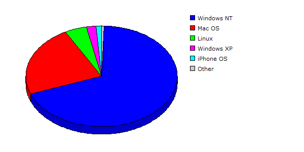

| Rank |
Operating System |
Hits |
Visitors |
| 1 |
Windows NT |
31150 |
24.66% |
3576 |
68.65% |
| 2 |
Mac OS |
13798 |
10.92% |
1191 |
22.86% |
| 3 |
Linux |
645 |
00.51% |
242 |
04.65% |
| 4 |
Windows XP |
80531 |
63.76% |
109 |
02.09% |
| 5 |
iPhone OS |
148 |
00.12% |
62 |
01.19% |
| 6 |
Windows 2000 |
22 |
00.02% |
21 |
00.40% |
| 7 |
Windows |
7 |
00.01% |
7 |
00.13% |
| 8 |
Windows Vista or Windows Server 2008 |
1 |
00.00% |
1 |
00.02% |
| |
Total |
126302 |
5209 |
|
Description: This report contains statistics about the operating systems that your visitors use.
|
|